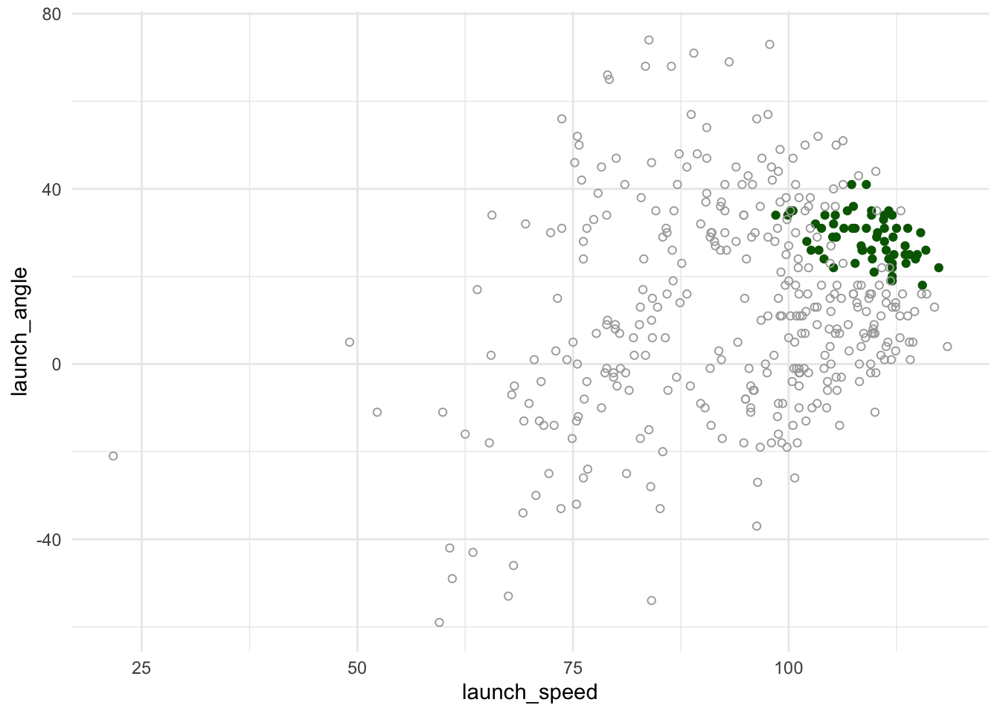
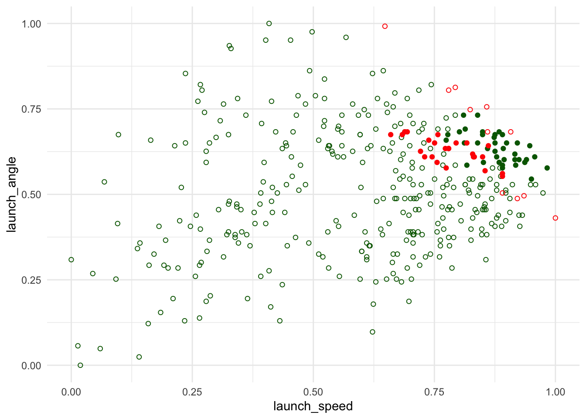

Can We Predict Home Runs?
Jack Werner
11/14/2022
Background
The purpose of this document is to create a model that can accurately classify home runs based on certain characteristics of a batted ball. The data used for this analysis is all of Aaron Judge’s balls-in-play in the 2022 regular season.
Variable selection:
In the time between contact and decision, what information exists?
To start with, launch speed & angle should certainly be included. Ballparks are also included as factors because the different shapes and sizes of the ballparks should have a strong impact on whether a hit is a home run. One could argue that we might want to include pitch type and pitch zone, but these ultimately factor into launch metrics so they are excluded to prevent collinearity. One missing piece of information is spray angle. Statcast has data but it is tracked by a person’s best judgement and is subject to error. This is excluded as it harmed the model’s results. The lack of reliable data contributes to an increased number of Type II errors as the model underestimates corner homers.
The graph below shows all of Aaron Judge’s 2022 balls-in-play, where green points are home runs.

Model Creation
This problem requires a classification model. This model was created using a Generalized Linear Model using the glmnet library. We are also using cross-validation with n=5 to help prevent overfitting and selection bias.
glmnet_hr <- train(
factor(homer) ~ .,
data = AJ_BIP_clean,
method = "glmnet",
trControl = trainControl(method = "cv", number = 5) #the model uses cross validation n=5 to ensure it isn't overfitting
)
glmnet_hr## glmnet
##
## 393 samples
## 3 predictor
## 2 classes: '0', '1'
##
## No pre-processing
## Resampling: Cross-Validated (5 fold)
## Summary of sample sizes: 315, 315, 313, 314, 315
## Resampling results across tuning parameters:
##
## alpha lambda Accuracy Kappa
## 0.10 0.0002955858 0.8601006 0.42988955
## 0.10 0.0029558578 0.8575690 0.39954371
## 0.10 0.0295585777 0.8447485 0.08640166
## 0.55 0.0002955858 0.8576006 0.42456907
## 0.55 0.0029558578 0.8575049 0.39869193
## 0.55 0.0295585777 0.8447485 0.06641297
## 1.00 0.0002955858 0.8576006 0.42456907
## 1.00 0.0029558578 0.8627288 0.44901489
## 1.00 0.0295585777 0.8447493 0.08384229
##
## Accuracy was used to select the optimal model using the largest value.
## The final values used for the model were alpha = 1 and lambda = 0.002955858.As the outpot shows, the model is able to classify hits with ~90% accuracy. You can see the variable importance graph below:

As suspected, the launch metrics have a huge impact on the result of Judge’s hits. Also shown is which ballparks had the most predictive power on his hits.
Below is the Confusion Matrix for the model. Note that 0 is not a home run, and 1 is a home run.
## Confusion Matrix and Statistics
##
## Reference
## Prediction 0 1
## 0 320 25
## 1 11 37
##
## Accuracy : 0.9084
## 95% CI : (0.8754, 0.935)
## No Information Rate : 0.8422
## P-Value [Acc > NIR] : 8.646e-05
##
## Kappa : 0.6205
##
## Mcnemar's Test P-Value : 0.03026
##
## Sensitivity : 0.59677
## Specificity : 0.96677
## Pos Pred Value : 0.77083
## Neg Pred Value : 0.92754
## Prevalence : 0.15776
## Detection Rate : 0.09415
## Detection Prevalence : 0.12214
## Balanced Accuracy : 0.78177
##
## 'Positive' Class : 1
## Once again, the accuracy is shown at ~90%. The sensitivity (correctly predicting true homeruns) is only ~60% but the specificity (correctly prediting negative) is ~96%. The Pos Pred Value is ~77%, meaning roughly 77% of hits that the model classifies as a home run is actually a home run.
The Balanced Accuracy is the average of the Sensitivity and the Specificity, which is about 78%.
Overall, these results show that the model does a fairly good job at classifying hits. It does especially well when the hit was not a home run, and it struggles a bit more to correctly identify home runs. This is likely a result of foul-line home runs (discussed above) and ballpark features like the short-porch at Yankee stadium.
The model results are plotted below. Solid dots are home runs, empty dots are not home runs. Green dots are correct preditions, red dots are incorrect predictions.
